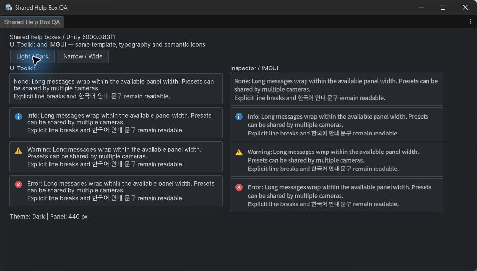
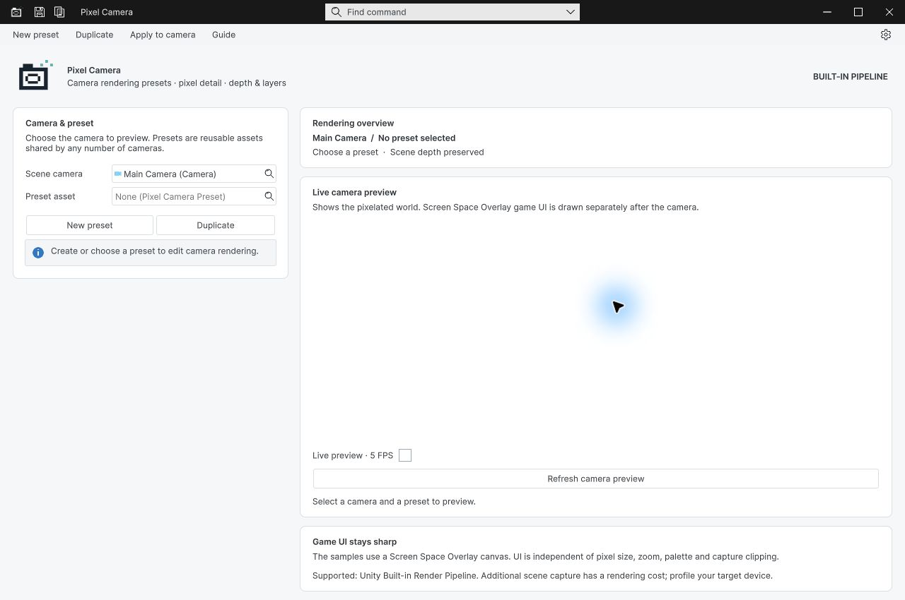
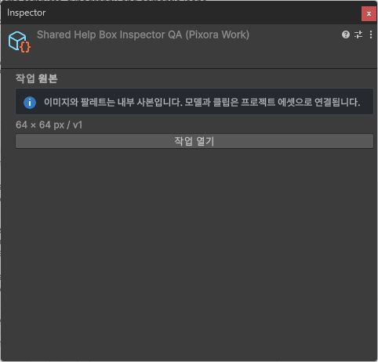
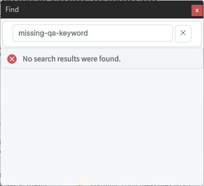

Tracefolio REPORTS & ISSUES
Tracefolio REPORTS & ISSUES공통 헬프박스 세 제품 적용과 실제 Unity 화면 검증
검증 대기Pixel Camera·Pixora·DataTable에 공통 헬프박스를 적용하고 실제 Unity UI와 새 캡처 7개·27개 언어판을 검증했습니다. 기존 다른 기능의 전체 문서 캡처 검사는 미통과입니다.
작업 결과
공통화와 세 제품 적용, 해당 기능의 실제 Unity 화면 검증을 마쳤습니다. UI Toolkit은 TemplateHelpBox, Inspector·IMGUI는 TemplateHelpBox.Draw를 사용합니다.




변경 내용
적용 내용
Templete 1.3.1 / API 1과 세 제품 최소 버전을 일치시켰습니다. 공통 폰트·패딩·아이콘 크기·모서리·테마를 공유하며 기존 diagnostics 컬러 아이콘을 사용합니다. PixelCamera의 동시 창 재설계는 덮어쓰지 않았고 현재 PixelCameraWindow.Design.cs의 공통 박스 적용을 대조했습니다. 기존 편집 카드 두 곳은 메시지 박스가 아니므로 보존했습니다. 9개 언어 문서를 제품별로 갱신하고 캡처 7개를 새 기록으로 추가했습니다. 과거 이미지·해시는 보존했습니다. 교훈 검토: IMGUI 강제 최소 높이의 자동 줄바꿈 실패는 실제 Unity에서 발견·수정했습니다. Unity 6.0의 GUIWordWrapSizer 소스와 대조한 근거는 프로젝트 개발 가이드에 기록했습니다. 전역에는 기존 검증 규칙과 중복되는 규칙을 추가하지 않았습니다.
검증
Unity 6000.0.83f1 별도 검증 프로젝트에서 실제 화면을 확인했습니다. 공통 박스는 240/440px, 양 테마, 4개 심각도, 긴 문구·명시적 줄바꿈을 확인했고 레이아웃 JSON 4개가 통과했습니다. 실제 테마·폭 버튼도 클릭했습니다. Pixel Camera는 영어 라이트·다크, PixoraWorkInspector는 한국어 다크, FindPopup은 영어 안내·오류 상태를 캡처했습니다. Find 키워드는 QA 코드로 설정했으며 네이티브 검색 입력 검증으로 주장하지 않습니다. 현재 소스와 QA 사본 해시가 일치할 때만 캡처 기록을 등록했습니다. 공통 DLL MVID: 09b61afd-5ef7-4237-b4e0-a6d5aa9bf4c9. 최신 5개 어셈블리 정적 컴파일 모두 exitCode 0. 새 헬프박스 문서 검사: 캡처 7개·27개 언어판·해시·이미지 링크 오류 0개. Pixora 기존 문서 구조·언어 이동 검사 통과. 모든 게시 이미지는 네이티브 JPEG를 편집·리사이즈 없이 저장했으며 약9~88KB, EXIF 없음, 실제 해상도에서 확인했습니다. 새 이미지 자산 제작이 아니므로 Affinity로 임의 변환하지 않았습니다. Pixel Camera의 이후 로고 소스 변경을 확인하여 최신 소스를 별도 QA에 반영하고 라이트·다크 V2 캡처를 추가했습니다. 잘못 가려진 화면 캡처는 검토에서 제외하고 게시하지 않았습니다. 별도 QA 에디터는 종료했으며 기존 사용자 에디터는 유지했습니다.
남은 사항
기존 다른 기능까지 포함한 DataTable 전체 문서 검사는 319개 캡처 소스 불일치/대기 때문에 미통과입니다. PixelCamera 전체 스크린샷 검사도 기존 09-ThroughWalls.unity 해시 불일치가 남아 있습니다. 새 HelpBox 캡처 오류는 0개입니다. 전체 가이드 검증과 메뉴얼은 완료 처리하지 않았습니다. 아홉 언어의 UI 배치를 전부 시각 검증한 것은 아니며, 각 캡처에 기록한 언어와 범위만 확인했습니다. 제품 패키지 재내보내기·독립 설치 검증은 이번 기능 적용 요청에서 수행하지 않았습니다.
작업 시간
- 제안 시간: 15~30분
- 실제로 완료된 시간: 시작 2026-11-01 02:03:41 Asia/Seoul. 최종 구현·화면 재캡처·새 문서 검증 02:26:21, 약 22분 40초. 최종 5개 어셈블리 컴파일 02:26:51. 공개 게시·접근 확인은 이후 별도로 진행합니다. 기존 전체 문서 QA 미통과로 전체 프로젝트 완료 시각은 기록하지 않습니다.
- XERJ: 실패 — XERJ 노드 미실행 및 데이터 디렉터리 잠금 오류 확인. rg로 현재 소스·사용처를 대조했습니다.